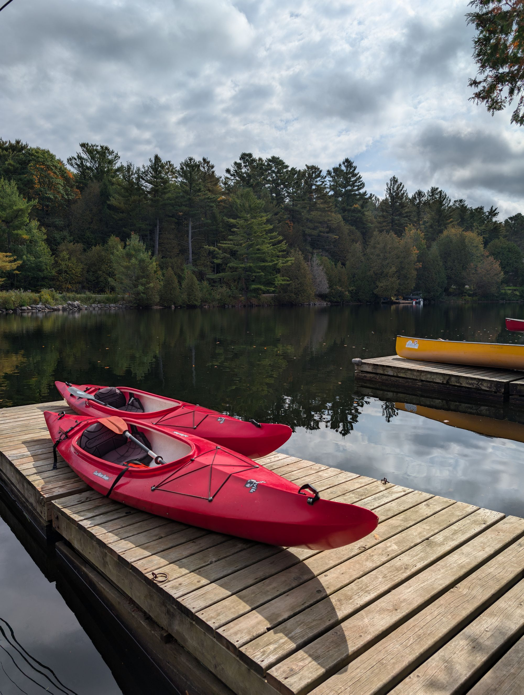
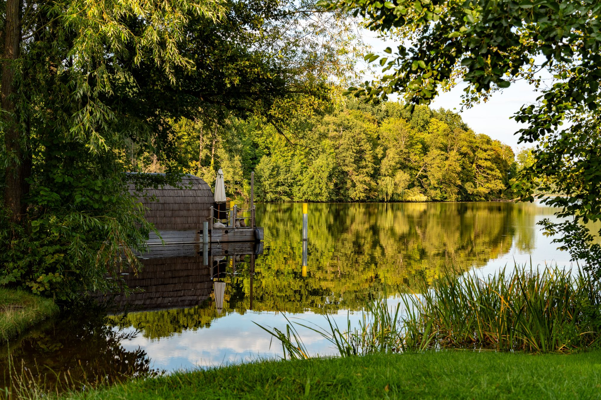
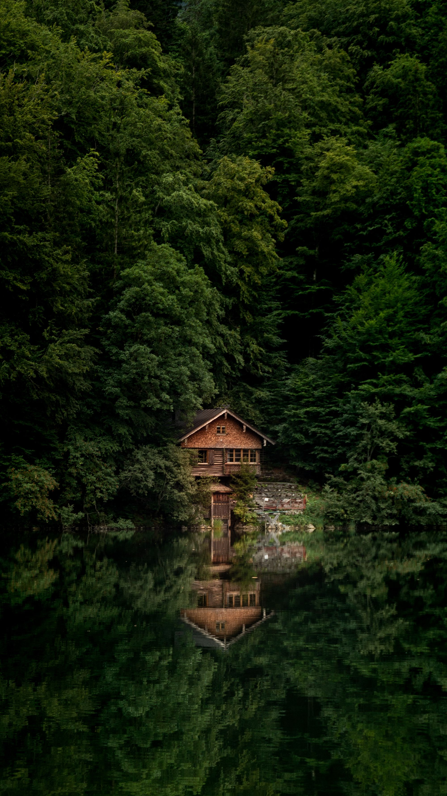

Прокат лодки · 1 500 ₽ за прогулку
Выйти на воду
Проплыть вдоль берега, посмотреть на лес с другой стороны и остановиться там, где особенно красиво.
Добавить к своему отдыху ↗У каждого отдыха свой ритм
Немного приключений, немного тишины и никакой спешки

Прокат лодки · 1 500 ₽ за прогулку
Проплыть вдоль берега, посмотреть на лес с другой стороны и остановиться там, где особенно красиво.
Добавить к своему отдыху ↗
Собственная сауна · в домике «Кедр»
Тёплый пар, аромат дерева и прохладный воздух у воды. В домике «Кедр» сауна только для вас.
Добавить к своему отдыху ↗
Лесные прогулки · в любое время
Уйти по тропинке без маршрута, устроить пикник или просто посидеть у озера.
Добавить к своему отдыху ↗